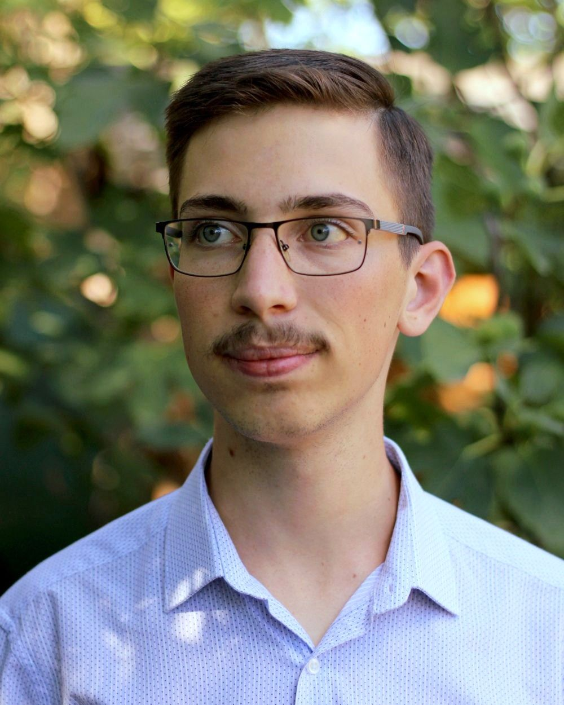

Török Barnabás vagyok, 2007-ben születtem Budapesten. A fényképezés és a képi világ kiskoromtól fogva érdekel; egy ideje leginkább a természet- és épületfotózás áll a szívemhez közel. Rendszerekben gondolkodom – a „nagy egész” átlátása és az apró részletek megismerése egyaránt foglalkoztat. A digitális fotózás mellett az analóg fotózást is érdekesnek találom: örülök az újnak, kedvelem a régit.
Középiskolai tanulmányaimat média-tömegkommunikáció szakon végeztem, és egyetemen is ezt az irányt folytatom. Az elmúlt évek során rendszeresen vettem részt tévés forgatásokon, valamint eseményfotózásokon; a fényképező(i)met pedig a szabadidőmben sem teszem le. Egy Canon EOS 2000D-vel és a Praktica Super TL1000-essel fényképezek.
Miért fotózom? – Az ok egyszerű, ez az egyik legkedvesebb hobbim. Szeretem megörökíteni a valóság különböző variációt. Megmutatom, milyen szemmel látom a világot. Rögzítem, amit értékesnek találok, legyen az egy színes tájkép, egy szürke épület apró részlete vagy egy csendéletszerű beállítás egy kihalt utcán.
Miért FrameNapló? – Szerettem volna egy olyan közösségimédia-oldalt és honlapot, ahol megoszthatom a fényképeimet. A frame szó a filmtekercsek képkockáira, a napló pedig a bejegyzések rendszerességére utal.
Bármilyen kérdésre, megkeresésre szívesen válaszolok. E-mail címem: torokbarnabas@frame-naplo.hu